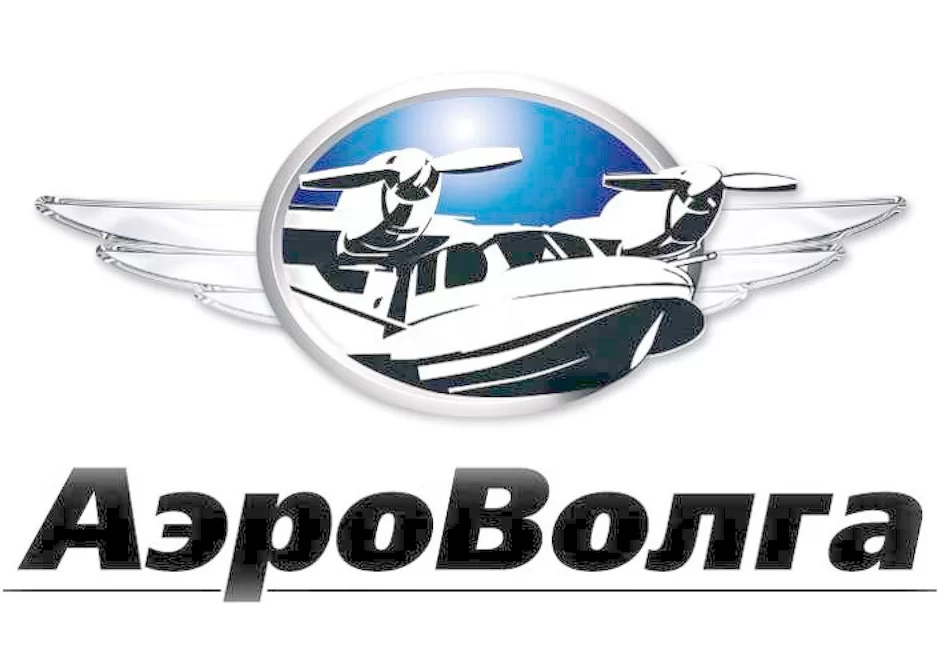

Main
Применение малой авиации
для учёта белого медведя
Представлена краткая аналитическая записка по результатам работы экспедиции «Хозяин Арктики»: тестовые учёты белого медведя, морских млекопитающих, загрязнений в границах территории арктической зоны РФ.
Учёты позиционируются как комплексные, так как охватывают одновременно несколько объектов исследований из живой (ластоногие, белухи) и неживой (загрязнения) природы. Однако приоритетным считается оценка распределения и численности белого медведя, и под это исследование планируется регион работ и сроки их проведения. Фиксация остальных объектов осуществляется попутными наблюдениями. Несмотря на такое определение, учёт ластоногих важен для оценки связности звеньев пищевой цепочки белого медведя, а белухи могут выступать индикатором биопродуктивности.
Белый медведь
О виде
N/A
Арктика
Ursus maritimus, умка, нанук, ошкуй
- Крупнейший наземный хищник (виден даже из космоса), чей образ жизни связан с морскими льдами, поэтому относится к морским млекопитающим.
- Редкий охраняемый вид, внесен в Красную книгу Российской Федерации и в Красный список Международным союзом охраны природы (МСОП). Общая численность вида около 25 тыс. особей.
- МСОП относит белого медведя к единой популяции с разделением на группировки, представленные в российской Арктике субпопуляциями Баренцева моря, Карского моря, моря Лаптевых и Чукотского моря. В Красной книге РФ (2001 г.) определены карско-баренцевоморская (объединение субпопуляций Баренцева и Карского морей), лаптевоморская и чукотско-аляскинская (субпопуляция Чукотского моря) популяции.

Субпопуляции белого медведя
Научная деятельность
N/A
с 2009 г.
Программа изучения белого медведя в Российской Арктике:
- Изучение пространственно-временного размещения животных, анализ перемещений белого медведя и оценка характера использования им местообитаний.
- Уточнение популяционной структуры географических популяций белого медведя.
- Изучение репродуктивной биологии и демографических показателей популяций.
- Изучение питания и доступности кормовых ресурсов.
- Изучение взаимоотношений белого медведя с другими видами животных и человеком.
- Изучение роли загрязняющих веществ, патогенных организмов и изменения климата на динамику численности.
- Изучение сезонной и межгодовой динамики ледовых местообитаний.
Программа изучения белого медведя Российской Арктики (здесь приведена с сокращениями) реализуется как самостоятельный проект в рамках Постоянно действующей экспедиции РАН по изучению животных Красной книги Российской Федерации и других особо важных животных фауны России, созданной и включенной в состав ИПЭЭ РАН на основании Распоряжения Президиума Российской Академии Наук от 29 февраля 2008 г. № 12300-128.
Для получения данных необходима экспедиционная деятельность: отловы и учёты.
Необходимость исследований
N/A
N/A
N/A
Актуальность:
- Изменение биоразнообразия и местообитаний белого медведя в результате климатических изменений
- Устаревшая и/или экспертная оценка численности для внутренних субпопуляций
Практическая значимость:
- Эффективное управление популяциями российской Арктики
- Сглаживание конфликтов «белый медведь - человек»
Численность субпопуляций российской Арктики (принятая МСОП):
- Баренцево море: 2600 (2004 г., авиаучёт)
- Чукотское море: 3000 (2019 г., моделирование)
- Карское море: неизвестно
- Море Лаптевых: неизвестно
Динамика субпопуляций российской Арктики:
- Недостаточно данных
Экспедиция 2020 г.
Версия LA-8 с увеличенной дальностью позволяет проводить учетные маршруты до 1400 км.
Организационное обеспечение:
- Анна Субботина
- Василий Богословский
Воздушный помощник:

Экипаж:
- Валерий Токарев - командир
- Андрей Иванов - второй пилот
- Андрей Вырлов - бортинженер
- Игорь Иващенко - штурман
Медиа группа:
- Ольга Карелина
- Владимир Филиппов
- Руслан Кулиев
Научное обеспечение:
Научная группа:
- Вячеслав Рожнов, ИПЭЭ РАН - рукововодитель, начальник Постоянно действующей экспедиции РАН
- Дмитрий Глазов, ИПЭЭ РАН - эксперт по морским млекопитающим
- Илья Мордвинцев, ИПЭЭ РАН - эксперт по белому медведю
- Евгений Назаренко, ИПЭЭ РАН - оператор инструментального комплекса, обработка данных
- Глеб Пилипенко, ИПЭЭ РАН - бортнаблюдатель, биогеография
- Ангелина Гнеденко, ВНИИ Экологии - бортнаблюдатель, камеральная обработка
- Никита Платонов, ИПЭЭ РАН - бортнаблюдатель
«Научная» эскадра
N/A
Труднодоступность Арктики
N/A
Сверхлегкая авиация малопригодна для размещения инструментального комплекса и имеет небольшую дальность полета, однако не требовательна к аэродромному обслуживанию
Крупнотоннажные самолеты могут быть использованы как летающие лаборатории (Ан-26 «Арктика», L-410 «Норд»), их дальность полета эффективна для авиаучётов и позволяет использовать сеть действующих арктических аэродромов для переброски в любой арктический район, но имеют высокую стоимость летного часа и стареющий парк.
Для учёта выбран LA-8
Летающая амфибия
Красный Яр, Самара
«АэроВолга»
Самолет малой авиации LA-8 имеет умеренную дальность полета, успешно зарекомендовал себя на визуальных учётах дельфинов Черного моря (2019 г.) и в ходе кругосветной воздушной экспедиции по Северному полярному кругу (2018 г.).
Инструментальный комплекс
N/A
N/A
N/A
- Фотокамера (видимый диапазон)
- Тепловизор (инфракрасный диапазон)
- Видеокамера
- GPS (координаты, высотомер)
- Датчик трехмерной ориентации
Задачи
N/A
N/A
N/A
- Изучение распределения белого медведя карско-баренцевоморской популяции на суше в безледный период
- Сбор данных для анализа взаимодействия белого медведя и морских млекопитающих в условиях отсутствия льда
- Оценка региональной экологической ситуации
Краткие итоги
N/A
Амдерма
31 июля - 21 августа
При базировании в аэропорту Амдерма выполнено 11 маршрутов за 8 полетных дней с тремя дозаправками в аэропорту Сабетта, затрачено 46.5 летных часов, налёт 9230 км.
Произведен сбор медиаматериалов.
По результатам предварительной обработки встречено около 40 белых медведей, 160 белух, 250 моржей.
Преодолённые трудности
N/A
N/A
N/A
- Техническое обслуживание самолета с логистикой доставки запчастей
- Рабочие дни и часы аэропортов в различных часовых поясах
- Окончание полярного дня
- Невозможность временного базирования для расширения покрытия
- «Закрытие неба»
Основные результаты
Регистрация белых медведей
N/A
Новая Земля, о. Белый, Ямал
13, 15, 16 августа
- Южная оконечность о. Южный архипелага Новая Земля (13 августа) - около 15 особей
- придерживаются возвышенного рельефа вблизи русел рек
- Северо-западное побережье п-ова Ямал (15 августа) - около 5 особей
- вблизи береговой линии
- Побережье о-ва Белый (16 августа) - около 20 особей
- чаще всего в группах по двое
- плотность выше на южном и восточном берегах
- большинство на умеренном расстоянии от кромки воды
- вблизи полярной станции за две недели до учета скопление из 15 белых медведей
- Один плывущий в сторону п-ова Ямал белый медведь у южного берега о-ва Белый (16 августа)
Регистрация моржей
N/A
о. Матвеев и др.
05 августа
Осуществлены пролёты над девятью известными лежбищами в Карском и Печорском морях. Кроме лежбища на о. Матвеев, животных на них не оказалось. В работах других исследовательских групп в те же сроки и в тех же районах также отмечается малое число моржей.
Обнаруженная незадокументированная залежка моржей (не менее 7 особей) на м. Белуший Нос (Вэбаркасаля) в зал. Вэбаркапаха (запад Ямала) требует дополнительной проверки.
При пролете лежбища на о. Матвеев паники среди животных не возникло.

По инструментальной съемке на о. Матвеев 223 моржа.

В инфракрасном диапазоне моржи на о. Матвеев выглядят яркими пятнами, поэтому применение тепловизора оказалось эффективным.
Обнаружение моржей в воде важно для оценки динамики лежбищ.
Регистрация белух
N/A
о. Вайгач, Югорский п-ов, п-ов Ямал
03, 04, 18 августа
- Трижды встречались стада (группы животных).
- При регистрации одиночных особей в двух случаях зафиксировано поведение, свойственное питанию.
Белухи фиксировались как инструментальной съёмкой, так и наблюдателями.
Регистрация загрязнений
N/A
N/A
N/A
- Антропогенный мусор вблизи поселений
- Берег на восточном побережье Ямала от Сеяхи до Саббеты усыпан пластиковыми или деревянными обломками («дощечками»)
- На Ямале вдали от побережья редкие крупные металлические обломки (предположительно, от плесецких запусков)
- Разливов нефтепродуктов не обнаружено
- Взвеси в воде фиксировались на мелководье и, вероятно, имеют речной генезис.
С воздуха по сравнению с Черным морем моря Арктики выглядят чище.
Подготовка экспедиции 2021 г.
Камеральная обработка результатов тестового авиаучёта 2020 г.
N/A
ИПЭЭ РАН
N/A
Совершенствование инструментального комплекса
N/A
N/A
N/A
- Расширение полосы обзора при сборе данных
- Автономность при передаче данных
- Повышение качества прицельных снимков
Межведомственное сотрудничество
N/A
N/A
N/A
- Минприроды (МПР)
- МПР готовит (по состоянию на 2020 г.) «Дорожную карту» сохранения популяций белого медведя с мероприятиями на 2021 - 2024 гг., в которой заложена оценка финансовых затрат на проведение авиаучётов для получения оценки численности популяций российской Арктики.
- МПР готовит (по состоянию на август 2020 г.) «Стратегию сохранения популяций белого медведя», в которой, вероятно, основным методом оценки численности белого медведя в российской Арктике будет определён авиаучёт, и будут прописаны требования к авиаучёту.
- Минобороны (МО), Федеральная служба безопасности (ФСБ)
- Разрешение на использование аэродромов специального назначения Нагурская (МО), Рогачёво(МО), о. Средний (ФСБ) в арктической зоне РФ для расширения покрытия учета.
- Разрешение работ на запретных территориях МО (Новая Земля).
- Росатомфлот и др. владельцы судов ледокольного класса
- Оперативный заброс топлива и части груза в зимнюю навигацию.
Росприроднадзор: при подготовке разрешительных документов на отлов белого медведя хотелось бы более устойчивой обратной связи с ведомством.
Необходимо указать на возможности малой авиации и задействовать её при планировании работ по учету белого медведя.
Выбор самолета
N/A
N/A
N/A
Проведение сплошного учета
N/A
Карское море
Весна 2021 г.
Площадные учёты надо льдами различных типов с частичным захватом суши регулярными галсами с целью оценки численности белого медведя и сбора медиаматериалов.

Три базовых аэродрома - Амдерма, о. Диксон, о. Средний. Обеспечение независимой переброски людей и груза между базовыми аэродромами (например, вторым бортом).
Cубпопуляция Карского моря
При радиусе покрытия в 450 км охват 87 % акватории, приходящейся на МСОП субпопуляцию Карского моря
Весенний ледовый период:
- Большинство белых медведей находятся на льдах.
- Попутный учёт моржей.
- Появление детенышей у тюленей.
- Выявление предпочитаемых мест размножения по встречам самок с сеголетками.
- Оценка численности по методикам Distance (общепринятая) и Челенцева.
Вскрытие Карского моря происходит с юго-западной в сторону северо-восточной части. Сроки сильно варьируют.
Другие субпопуляции
Баренцево море
Летний безледный период:
- Невозможность полного покрытия МСОП субпопопуляции Баренцева моря из-за частичной ледовитости региона.
Согласование с норвежской стороной для синхронизации учетов со стороны Шпицбергена и кромки льда.
- Сплошной авиаучет территорий архипелагов Новая Земля и Земли Франца Иосифа
- Учет вертолетами или БПЛА кромки льда с базированием на судне
Базирование на Нагурской (МО) и в Рогачёво (МО).
Море Лаптевых
Весенний период
Варианты базирования: Тикси (МО?), Темп (МО), Нижнеянск, Саскылах, Хатанга
Большие подлеты из-за крепкого припайного льда к югу от Великой Сибирской Полыньи.
Чукотское море
Весенний период (выход медвежат из берлог)
Согласование с американской стороной для синхронизации учетов со стороны Аляски.
Варианты базирования: Певек, м. Шмидта (МО), Залив Лаврентия, (возм.) о. Врангеля (МО)